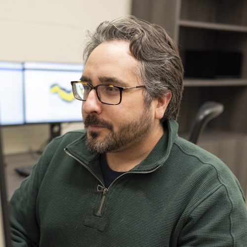
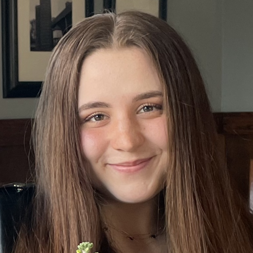

People
A small group with a wide reach: psychologists, statisticians, and computer scientists working on one set of questions. Click a person for their profile and publications.
Lab Director

No matching items
Graduate Students
Students join the lab through the Clinical Psychological Science (CPS) and Brain, Behavior, and Quantitative Science (BBQ) doctoral programs.

No matching items
Alumni
31 people have been part of the lab since 2020, from honors students to a postdoctoral fellow.